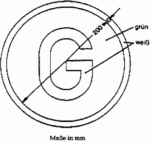

Buchstabe "G" hinsichtlich Schriftart und -größe gemäß DIN 1451, Teil 2, Ausgabe Februar 1986 (Bezugsquelle siehe § 73). Schriftgröße h = 125mm. Die Farbtöne sind dem Farbtonregister RAL 840 HR des RAL Deutsches Institut für Gütersicherung und Kennzeichnung e.V., Siegburger Straße 39, 53757 St. Augustin, zu entnehmen, und zwar ist als Farbton zu wählen für weiß: RAL 9001 und für grün: RAL 6001. Die Farben dürfen nicht retroreflektierend sein.
Ergänzungsbestimmung:
Das Zeichen ist an der Fahrzeugvorderseite sichtbar und fest anzubringen; es darf zusätzlich auch an der Fahrzeugrückseite angebracht sein.